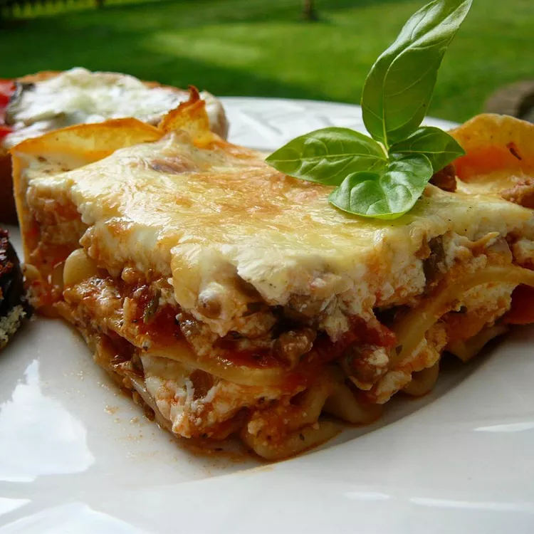

Sour Cream Lasagna

This is my grandma's best lasagna recipe, except I use sour cream instead of ricotta (a trick I picked up from my mother-in-law). She always made it for birthdays and special occasions. This makes a large amount, so I halve it when making it for my boyfriend and myself. It's very cheesy, so sometimes I add a little extra tomato sauce.
- ½ pound ground pork sausage
- ½ pound ground beef
- 1 clove garlic, minced
- 1 (28 ounce) can diced tomatoes
- 1 (8 ounce) can tomato sauce
- 1 tablespoon dried parsley
- ½ teaspoon dried basil
- ½ teaspoon dried oregano
- 1 pinch white sugar
- 1 (8 ounce) package lasagna noodles
- 1 (16 ounce) container sour cream
- 2 (12 ounce) packages shredded mozzarella cheese, divided
- ¾ cup grated Parmesan cheese
- ½ cup chopped pitted green olives
- 3 large eggs, lightly beaten
- 2 teaspoons salt
- ¼ teaspoon ground black pepper
- Preheat the oven to 375 degrees F (190 degrees C).
- Cook sausage, ground beef, and garlic in a large skillet over medium-high heat, stirring occasionally, until browned and crumbly, 5 to 7 minutes. Drain any excess grease.
- Stir in diced tomatoes, tomato sauce, parsley, basil, oregano, and sugar. Bring to a boil over high heat, then reduce the heat to medium-low and simmer, stirring occasionally, until thickened, about 30 minutes.
- When the sauce has simmered for about 15 minutes, bring a large pot of lightly salted water to a boil. Add lasagna noodles and cook, uncovered, stirring occasionally, until tender yet firm to the bite, about 8 minutes. Drain.
- Stir sour cream, 1/2 of the mozzarella, Parmesan, olives, eggs, salt, and pepper together in a bowl.
- Assemble the lasagna: Spread a thin layer of meat sauce evenly over the bottom of a 9x13-inch baking dish. Cover with 1/3 of the lasagna noodles, 1/3 of the remaining meat sauce, and 1/3 of the cheese mixture; repeat layers two more times with remaining noodles, sauce, and cheese mixture. Sprinkle remaining mozzarella evenly over top.
- Bake in the preheated oven until sauce is bubbly and the cheese is golden brown, about 30 minutes.